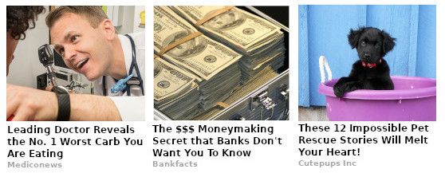
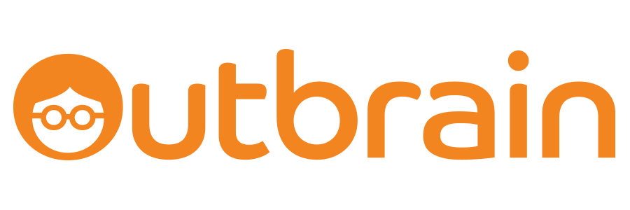
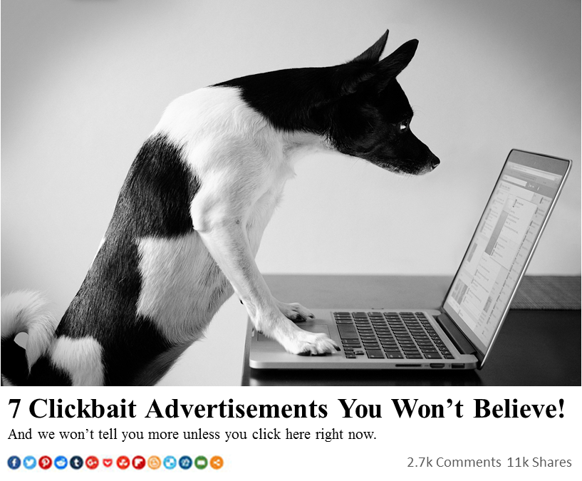
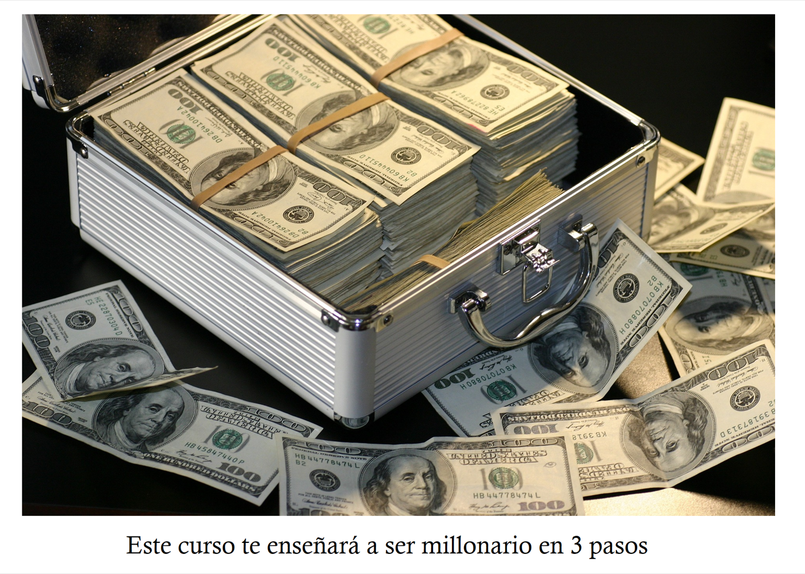
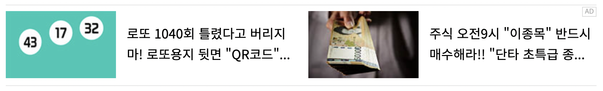

Those “Around the Web” thumbnails are often paid placements. Ten recurring designs, who pays for the click, and where an attention grab becomes deception.
10 min read / Plus optional research notes

A chumbox, illustratedThree fictional ads: medical authority, a financial secret, and a pet-rescue list. Each headline leaves the promised detail behind the click.Illustrative example · Lord Belbury, Wikimedia Commons, CC BY-SA 4.0
A news site can be paid when you click an ad that looks like another news story. The “Around the Web” grid makes the purchase resemble a recommendation: a thumbnail, a headline, and another place to read. The disparaging nickname is chumbox, after fish bait. Some tiles lead to useful content. Others promise a miracle cure or a secret fortune and deliver a page crowded with more ads.
Who gets paid
The business behind the grid
A recommendation network connects the publisher selling space with the advertiser buying a visit. In a cost-per-click campaign, the advertiser pays when someone clicks, and the network shares revenue with the publisher. Other campaigns pay for views or actions such as purchases. Taboola describes these arrangements in its 2025 annual report. The money pays for access to the reader, whether or not the recommendation was useful.

Taboola and the former Outbrain brand; Outbrain became Teads in 2025
Taboola and Outbrain became familiar names under these grids. Outbrain acquired Teads in February 2025 and changed its corporate name to Teads that June. Their businesses extend beyond the lurid thumbnails shown here.
$1.91B
Taboola’s reported 2025 revenue across its business. Net income was $42.3 million. Revenue includes amounts paid onward for publisher space and other advertising inventory; it is neither profit nor a measure of clickbait alone. 2025 annual report
A seller can use a visit to sell a product, collect a sales lead, or earn money from ads on the destination page. The ad-funded version is traffic arbitrage: buy a visit for less than it earns. In a hypothetical example, a visit costs one cent and produces two cents of ad revenue. The difference is one cent before other fees and operating costs. Those are illustrative prices, not a typical margin. The result depends on the price of the incoming traffic and what advertisers pay for the destination’s ad space.
The advertiser trade groups call sites built around this model “made for advertising.” Their definition includes paid traffic and aggressively monetized pages. A long slideshow fits the model: more page loads create more opportunities to display ads. It also explains why a thumbnail can succeed commercially while disappointing the person who clicked it. A business buying traffic needs enough visitors to generate revenue, and a one-time visitor’s satisfaction may count for little. That is the incentive I object to.
The selection process is concrete. Advertisers test different images and headlines, then favor combinations that meet their goals. Taboola’s own creative-testing guide warns that highly clickable combinations can receive most of the exposure while delivering poor results after the click. It recommends measuring purchases, sign-ups, or other outcomes as well. Clickbait is a risk of this system, not the purpose of every campaign.
The withheld detail
A question you must click to answer
“The worst carb” names a category and withholds the member. “One weird trick” promises a method and withholds the method. The photograph can pose the same question: what is that thing? This is the curiosity gap, a useful description of how the ad is written.
George Loewenstein’s 1994 information-gap theory proposed that noticing a gap in what we know can motivate us to close it. That helps explain the pitch. It does not establish how strongly a particular thumbnail affects a reader, or whether the reader will click. The advertiser can test a design without knowing which psychological explanation is right.

The withheld answerThis fictional ad states the bargain outright: the promised list appears only after the click. The dog supplies a familiar subject; the headline supplies the missing information.Illustrative example · GreenMeansGo, Wikimedia Commons, CC BY-SA 4.0
Ten recurring designs
What the thumbnail promises
These are overlapping visual patterns, not ten scientifically established mechanisms. A single tile can combine medical fear, a homemade-looking drawing, and a withheld cure. The categories describe what is visible in the ad; their effectiveness depends on the audience, offer, and destination.
No. 01
The unidentifiable close-up
An extreme crop removes scale and context. Skin can resemble food; a household object can become an unfamiliar lump. With a headline such as “Odd Trick Destroys Erectile Dysfunction,” identifying the image becomes an extra reason to click. The crop withholds information the uncropped photograph could supply.
No. 02
The grotesque and the medical
Toenails, skin tags, swollen feet, and things under the skin give a health claim a visible problem. “New Diabetes Discovery Leaves Doctors Speechless” adds a promised breakthrough. The unpleasant picture and the proposed solution arrive together. Nothing in that pairing tells us whether the diagnosis or treatment is sound.
No. 03
The miracle cure and the enemy
A pill or kitchen ingredient appears beside “Doctors Hate Him.” The story explains the absence of mainstream support by inventing an enemy who wants to hide the cure. Crude drawings and homemade-looking layouts fit the story of an ordinary person sharing a discovery. Whether that style actually wins more clicks requires a campaign test.
No. 04
The before and after
A split frame shows the result before explaining the method: heavier and thinner, bald and covered in hair, old and young. The missing step is how the change happened. Even authentic photographs cannot establish that the advertised product caused it. Lighting, timing, pose, and other changes also matter.
No. 05
The celebrity hook
A recognizable face supplies a subject before the headline supplies the news: a secret, a death, a scandal, or an endorsement. Fans may have a one-sided attachment to that person; other readers may simply recognize them. The crucial distinction is between using a famous person as a topic and falsely claiming that they recommend a product.
No. 06
The forbidden and the censored
A blur or black bar marks the exact detail you aren’t being shown. “They don’t want you to see this” adds an opponent to the concealment. The missing area can become the advertised attraction, although a censor bar can also serve a legitimate privacy or content-warning purpose. Its presence alone doesn’t tell us which.
No. 07
The local hook
“Drivers in [your city] are furious” makes a broad offer appear locally relevant. Advertising systems can target by location, but a place name in a headline is no proof of a local investigation or a new law. A demographic version does the same thing with “People born before 1970.”
No. 08
The money promise
Cash, gold, and luxury watches picture the gain. “Banks don’t want you to know” offers privileged access to a withheld method and explains its secrecy through an enemy. An urgent deadline adds pressure to act.

The money promise“This course will teach you to be a millionaire in 3 steps.” The cash illustrates the desired result. It gives no evidence that the course can produce it.Illustrative example · El Rolo Ueeqee, Wikimedia Commons, CC0No. 09
The uncanny and the AI
A distorted hand, implausible scale, or too-smooth face can make the image itself a puzzle. Generative tools also let advertisers produce variations quickly: Taboola offers generated images and headlines. A campaign can try new pictures without arranging a new photograph. The production method alone tells us little about whether readers will click.
No. 10
The face that stares back
A tight face with wide eyes and an open mouth suggests a reaction whose cause is missing. Direct gaze has some laboratory support: Palanica and Itier studied 56 undergraduates viewing computer-generated people and found longer overall viewing of faces looking toward the viewer. Direct gaze did not speed the first look or lengthen the first fixation. The study measured looking at characters, not clicks on shocked-face ads.

Financial bait in KoreanLottery balls, a banknote, and headlines cut short. The small “AD” at the upper right identifies this row as advertising. The money-and-secret pitch appears here in another language.Korean clickbait row · Xnou, Wikimedia Commons, CC BY-SA 4.0
Where the pitch becomes deception
A paid placement can still tell the truth
Native advertising means advertising shaped to resemble the material around it. A clearly identified paid article can be useful, and an advertiser can accurately promote a product. The problems are concrete: concealing payment, pretending to be an independent news source, or making false claims. A grotesque thumbnail is not by itself proof of fraud.
The FTC’s 2015 native-advertising guidance asks whether an ad’s overall presentation misleads reasonable consumers about its commercial nature. When a disclosure is needed, it must be clear and prominent before the click as well as on a misleading destination page. Some ads are obviously commercial without an extra label. A network logo alone is not necessarily an adequate disclosure.
There are established cases of deception in the broader traffic-buying business. In the 2016 LeadClick decision, a federal appeals court upheld liability for an affiliate network that knew of, approved, and helped develop fake news pages selling LeanSpa weight-loss products. It also bought banner space on real news sites for those affiliates. That case shows how a credible placement can feed a fabricated sales story; it does not establish that Taboola or Teads committed the same conduct.
The FTC’s 2024 reviews and testimonials rule prohibits businesses from creating or selling reviews and testimonials that materially misrepresent a person’s existence, product use, or experience. Some other prohibited uses, such as purchasing reviews or disseminating testimonials, depend on what the business knew or should have known. Celebrity endorsements and AI avatars can still be lawful. The FTC’s explanation says an avatar testimonial can violate the rule when the underlying experience is fake or false, or when an unauthorized celebrity avatar misleadingly implies a real endorsement.
Before buying the promise
What the thumbnail leaves out
Who paid for the placement? Look for an “Ad” or “Advertisement” disclosure. A familiar news site is hosting the tile; that does not mean its reporters chose or checked the destination.
What is the actual claim? Identify the cure, return, or transformation being promised. A secret with no stated method gives you little to assess before the click.
What does the image establish? A photograph may be evidence of what it depicts. Its origin, date, context, and relationship to the product still need checking. A generated picture cannot document a real customer’s result.
Where does it lead? A product page, sign-up form, search page, and ad-heavy slideshow have different purposes. If you want to avoid the grid altogether, a content blocker or reader view may remove it; coverage varies.
John Mahoney used the name in his annotated taxonomy in 2015. His examples show how little some of the visual vocabulary has changed. The screenshots tell us what was displayed. They cannot tell us which tile earned the most money, or whether a particular reader believed its promise.
Sources, research limits, and image credits
What the psychology studies measured
Loewenstein (1994) is a theoretical review, not an experiment on chumboxes. Its information-gap account concerns the motivation to learn missing information. Applying it to these headlines is an interpretation.
Kang and colleagues (2009) studied trivia questions, with the full paper available from an author. Curiosity ratings were related to spending limited tokens or waiting for answers. The waiting task involved 20 Caltech students and delays from 5 to 25 seconds. This supports willingness to pay a cost for information in that task, not a click-rate estimate for ambiguous photographs.
Gruber, Gelman, and Ranganath (2014) also used trivia questions, anticipation periods, and memory tests. Their scans associated curiosity with activity in areas implicated in reward and memory. fMRI measures blood-oxygen changes; the authors explicitly caution that it cannot establish increased dopamine release here. Neither trivia study measured these ads or readers’ judgments about them.
Palanica and Itier (2012) compared direct and averted gaze in generated characters during free viewing and attractiveness ratings. The finding concerns overall viewing time; it does not establish emotional contagion or commercial effectiveness.
Business records and law
Taboola’s 2025 annual report: the revenue figures, cost categories, payment models, and publisher revenue sharing. These are consolidated company accounts, not a count of deceptive ads.
Mahoney’s 2015 essay supplies annotated examples. Wikipedia collects the term’s later coverage, and Know Your Meme documents parodies of “One Weird Trick.” The ten categories here are an editorial guide, not a classification from either source.
On the images
The first three examples are illustrations, not captured advertising campaigns. The Korean row is credited by its uploader as Korean clickbait news. Wikimedia Commons lists the licenses below; the images alone do not establish who bought a placement or how well it performed.